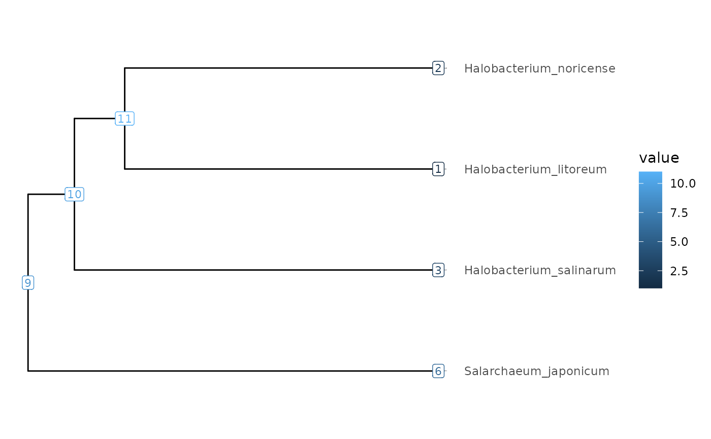

Takes a tbl_tree object representing a tree, and extracts a subtree at a
given node.
Arguments
- tree_tibble
A
ConvenientTblTreeobject.- node
The ID number of the node to base the subtree, or a
FocalCladeobject.- ...
Other arguments (currently ignored)
Value
A subtree represented in the tbl_tree class of the tidytree
package. This tibble has an extra node.orig column providing the old node
IDs, because the node IDs in the object are renamed during the extraction
of the subtree.
See also
Other Focal clade functions:
eog(),
focalClade(),
recordAncestor(),
recordClades(),
subMatrix(),
visualizeTree()
Examples
(subtree <- subTree(Halo_Tree, 9))
#> # A tbl_tree abstraction: 7 × 8
#> # which can be converted to treedata or phylo
#> # via as.treedata or as.phylo
#> parent node branch.length label group Percent_difference Scrambling_index
#> <int> <int> <dbl> <chr> <fct> <dbl> <dbl>
#> 1 7 1 10.6 Halobact… 1 NA NA
#> 2 7 2 10.6 Halobact… 1 NA NA
#> 3 6 3 12.3 Halobact… 1 NA NA
#> 4 5 4 13.9 Salarcha… 1 NA NA
#> 5 5 5 1.75 NA 1 27.8 0.869
#> 6 5 6 1.57 NA 1 24.6 0.618
#> 7 6 7 1.70 NA 1 21.2 0.605
#> # ℹ 1 more variable: node.orig <int>
visualizeTree(subtree, subtree$node.orig)
